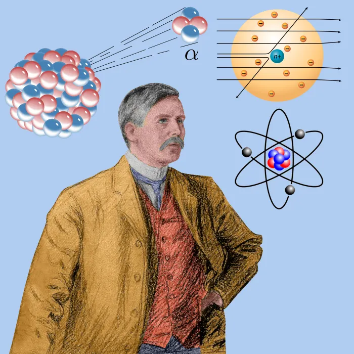
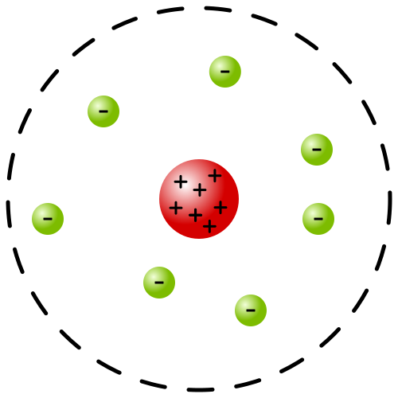

Who is Rutherford?

Ernest Rutherford, 1st Baron Rutherford of Nelson, OM, FRS, HonFRSE (30 August 1871 – 19 October 1937) was a New Zealand physicist who came to be known as the father of nuclear physics. Encyclopedia Britannica considers him to be the greatest experimentalist since Michael Faraday (1791–1867). Apart from his work in his homeland, he spent a substantial amount of his career abroad, in both Canada and the United Kingdom.
Rutherford's atomic model

According to Rutherford's Model of Atom:
- The mass of the atom is concentrated in the center of the atom.
- Rutherford model proposed that the negatively charged electrons surround the nucleus of an atom.
- Rutherford model proposed that the negatively charged electrons surround the nucleus of an atom
Limitations of Rutherford Atomic Model
- He could not explain the stability of an atom
- He could not explain the positioning of electrons around the neucleus
Gold Foil Experiment
Alpha Particles:
- consists of 2 protons and 2 electrons who are tightly bounded together
- High energy
- low Penitration
- Found during radio-active decay

Postulates:
- An Atom consists of 2 parts, neuclear and extra neuclear part
- neucleus is present in the center and is surrounded by extra neuclear part
- Mass of an atom is mainly at the center
- The Positive charge of the neucleus is because of the presence of protons
- the negative charge(electrons) are present in the extra neuclear space
- The Total number of positive and negative charges are equal, thus making the atom electrically neutral
- electrons are revolving around the neucleus at a high speed following a circullar path
- Electrons do not merge with the neucleus
- the radius of the neucleus of the atom is 10-15 m and radius of an atom is 10-10 m

Alpha particles were allowed to pass through a fine slit and then strike the gold foil. Following observations were made:
- Most alpha particles were able to pass through the gold foil
- Some alpha particles were deflected by small angles
- a few particles(approx 1 in 12,000) bounced back in the same direction